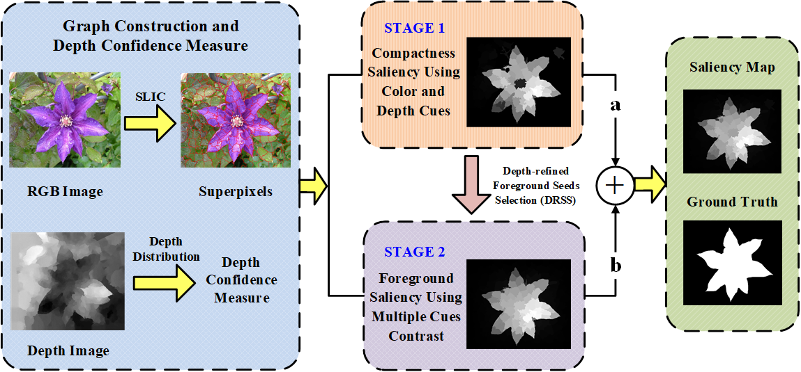

Saliency detection for stereoscopic images based on depth confidence analysis and multiple cues fusion
Introduction:
-
Stereoscopic perception is an important part of human visual system that allows the brain to perceive depth. However, depth information has not been well explored in existing saliency detection models. In this letter, a novel saliency detection method for stereoscopic images is proposed. First, we propose a measure to evaluate the reliability of depth map, and use it to reduce the influence of poor depth map on saliency detection. Then, the input image is represented as a graph, and the depth information is introduced into graph construction. After that, a new definition of compactness using color and depth cues is put forward to compute the compactness saliency map. In order to compensate the detection errors of compactness saliency when the salient regions have similar appearances with background, foreground saliency map is calculated based on depth-refined foreground seeds’ selection (DRSS) mechanism and multiple cues contrast. Finally, these two saliency maps are integrated into a final saliency map through weighted-sum method according to their importance. Experiments on two publicly available stereo data sets demonstrate that the proposed method performs better than other ten state-of-the-art approaches.
